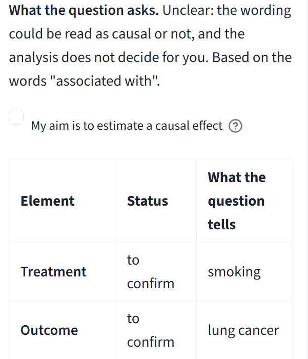
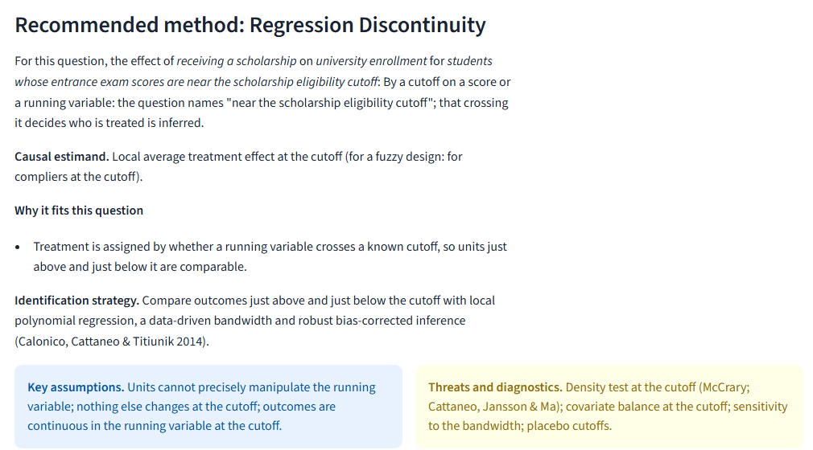

Thierry Z. Barhame · MSc Statistics and Data Analytics · Advanced Programming, ELTE
For students and researchers with a causal question who are about to choose a method.
Why: a form alone gave answers that ignored the question. On 2026-11-01 a question about a scholarship cutoff got difference-in-differences.
Source of the 2026-11-01 case: docs/defense/DEFENSE_GUIDE.md.
In: “Is smoking associated with lung cancer?”

In: the effect of a scholarship near its eligibility cutoff, form confirmed

True effect −0.50 · difference-in-differences · diverging pre-trends
The method works when it should, and fails by 47% of the effect while its usual test stays quiet in 858 of 1,000 worlds. The rule (at most 10% bias, at least 90% coverage) was fixed after the pre-trends run, before the three other threats.
Bars to scale. Source: docs/DEMO_DETAILS.md and causal_lab/data/demo_study/results.json; a known problem (Roth, 2022).
The agent improved the question reader and it passed its recall target on a new set. Running the old version on that same set showed most of the gain was the set, not the code.
| Set | Version | Precision | Recall (target 0.70) | Version 2, same set |
|---|---|---|---|---|
| 2 | 2 | 0.95 | 0.60, fails | |
| 3 | 3 | 1.00 | 0.83 | 0.80 |
| 4 | 3.1 | 0.96 | 0.86 | 0.79 |
So every evaluation set is frozen by hash before its single run, and no number is reported alone.
Source: docs/evaluation/v3/REPORT.md and docs/evaluation/v4/REPORT.md (commits 9880fcb, 14b3db1).
Try it: causal-lab-a-virtual-laboratory-for-causal-research-busavtyebb.streamlit.app · Page: esst-prog2.github.io/CAUSAL-LAB-A-Virtual-Laboratory-for-Causal-Research